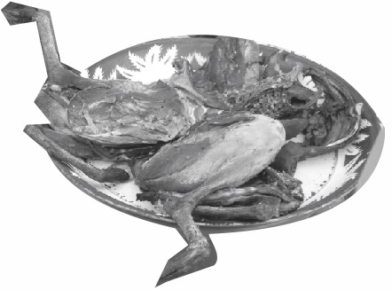

In addition, Aderonke never cared how long the smoking of meat would takeher- because she respected and obeyed her husband instructions, always. She was so kind and every single woman in the community loved to be like her. Too many women, ladies, youths, teenagers, she was their role model.
She respected herself in every spot she found herself. Odesanmi is a strict man as a hunter.
Aderonke and her two-month old child were together in the kitchen smoking the meat, in the next house, some of her acquaintances were seriously fighting; she had to leave the kitchen quickly and helped them to settle the fight.
And the meat she was smoking actually smelt nicely. Behold, the king's son was coming back from his chum's place with some of his escort guards, as he was on his way home; he passed by and perceived something smelling nice.
So he stopped and gave awell-ordered to the guards not to follow him. He traced where the aroma was coming from, after some minutes, he stood still, and said “had it been I have magic, I'll probably use it to fish out where this nice aroma is coming from.
He pressed on and got to know that the aroma wasn't from anybody's house, except Odesanmi's house. He was so ecstatic when he found out that the aroma was from Odesanmi's house. Although, he had once heard from someone saying “Odesanmi's wife knew how to cook”.
Immediately, he went straight inside the kitchen and packed all the bush meat that was on fire, without leaving any trace. When he was coming back where he'd left his guards, Gbendu one of his guards saw him holding something, but he never knew what it could be. He asked what was in the nylon, but Lefun did as if it wasn't him he was talking too.
Nevertheless, after she has finished settling the fights, she went back to her kitchen and found that nothing was on fire. She said “am I dreaming or what”? She exclaimed and said!“But it was obvious that I'd left all this meat here”. She was so fagged and tears seriously.
Suddenly, Mubo looked at her mother's face, wherewith, and called her by name “Aderonke!” why are you crying”? He continue “When I was in your womb I knew all that was going on between you and lovely husband, even though he's a nice man; but he easily gets angry”.

Therefore, her son said “Mother, I know who has stolen your bush-meat immediately you left”.
The mother replied “who?” she asked and her son said “mother! I know you aren't going to believe, but it was the “King's son… Feyinlefun”. He came alone and packed all the meat dissipatedly”. Of course, immediately when she heard her child talking, she wasn't too sure of what her child was saying; she drew closed to him and heard him saying “my mother it seems you are not sure of what I just told you?” Aderonke was trembling and ran outside.
She was confused and said too herself “How could this be possible? Although, she was ambience shocked with what she saw. Hence, she thought of it carefully and went back to the kitchen and took him away. Thereafter, she went to the palace and reported the case to the King about what his son had done. Behold, when the king heard all what his son had done, he felt she was lying against him. Though, in the other phrase, he wasn't happy. The King said to her,
“Actually how can you convince me? The King continued. “Now, your report looked complicated! Thereafter, the King asked one of his guards to call Feyin. Herewith he comes, what I just heard now, is it true that you went to Odesanmi's house too stole their bush meat she was smoking?
Besides, Feyinlefun doesn't have anything to utter, but, later sensed within himself and said“I'd need to pretend as if I don't know anything…hmm, let me claim right”.